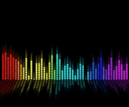

Desde el inicio de los tiempos la música y la sociedad humana han estado relacionados íntimamente, principalmente para la comunicación y la expresión, en este caso la música de rondalla o trio, es una forma de expresión regularmente en el ámbito romántico, siendo así que gracias a que su creación fue hecha en México se considera ya parte de la cultura en México y se ha transmitido al mundo.
La música puede desempeñar un papel importante en el desarrollo humano en los primeros años, estimulando a los fetos y a los bebés de tal manera que se asegure su bienestar. Las interacciones tempranas entre madre e hijo tienen una cualidad esencialmente musical la cual ayuda en el desarrollo de las habilidades comunicativas. Escuchar música no parece afectar directamente a la inteligencia, aunque la participación activa en la creación de música puede mejorar la autoestima y promover el desarrollo de una gama de habilidades sociales y transferibles. Escuchar sonoridades tranquila y relajantes puede mejorar el rendimiento en una variedad de labores académicas, mientras que la música emocionante puede interferir en ellas. La considerable disponibilidad de música actual parece alentar a las personas a utilizar este arte con el fin de manipular sus propios estados de ánimo, reducir el estrés, aliviar el aburrimiento mientras se realizan tareas tediosas o repetitivas y crear ambientes apropiados para determinados tipos de ocasiones sociales. En resumen, la música es utilizada por las personas para mejorar la calidad de sus vidas y añadirle vitalidad a sus momentos individuales o en grupo.
